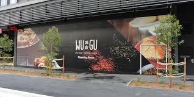
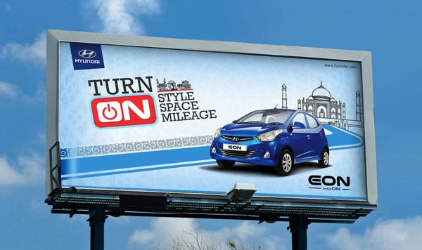
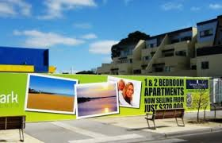
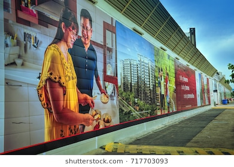

<link rel="stylesheet" href="https://cdnjs.cloudflare.com/ajax/libs/font-awesome/4.7.0/css/font-awesome.min.css">
 
<ion-header no-border>
<ion-row style="height: 13vw; background-image: linear-gradient(to right,#d6d5d5,#929292);-webkit-box-shadow: -1px 7px 5px -6px rgba(0,0,0,0.75);-moz-box-shadow: -1px 7px 5px -6px rgba(0,0,0,0.75);box-shadow: -1px 7px 5px -6px rgba(0,0,0,0.75);">

    <ion-title style="text-align: left;font-size:8vw;margin-top: 1vw">

      <button menuToggle start style="height: 10vw;width: 10vw;background-color: transparent">
        <ion-icon name="menu" style="color: black;font-size: 9vw"></ion-icon>
        <div style="margin-left: 9vw;margin-top: -8vw;font-size: 7vw">Menu</div>

      </button>

    </ion-title>
</ion-row>
</ion-header>
<ion-content>


<div style="margin-left: 33vw;margin-top: 10vw">
  
    </div> 

    
    <div style="margin-left: 10vw;margin-top: 7vw">
      
       
  
   
 
   
    
    </div> 


    <div padding>
      <p>
             <span style="margin-left:17vw">  Outdoor </span>advertisement creates impact on customers.Outdoor advertisement influence to buy the product
         . Outdoor advertisement gives useful information about the product
         .Outdoor advertisement helps consumers to know where the product is available
        
        
     </p>
     <ion-row>
       <ion-col></ion-col>
     </ion-row>
     <p>
         <span style="margin-left:17vw"> Outdoor</span> advertisement creates more impact on customers to purchase the product
         .Outdoor reaches consumers at the most important time in the market and ready to buy.
       
     </p>
     <div style="margin-left: 2vw;margin-top: 7vw">
        
         
    
     
   
     
      
      </div>
     
     <p>
  <span style="margin-left:17vw">  Outdoor </span>advertisement can be seen at any time
         .Outdoor advertisement generates reputation and brand name of the production company
     .Outdoor advertisement continuity to the media mix
   </p>
   
    </div>

</ion-content>